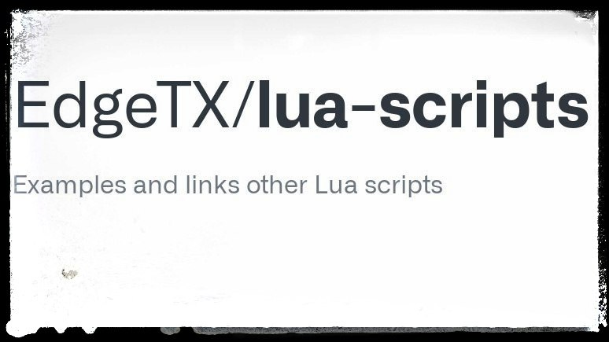
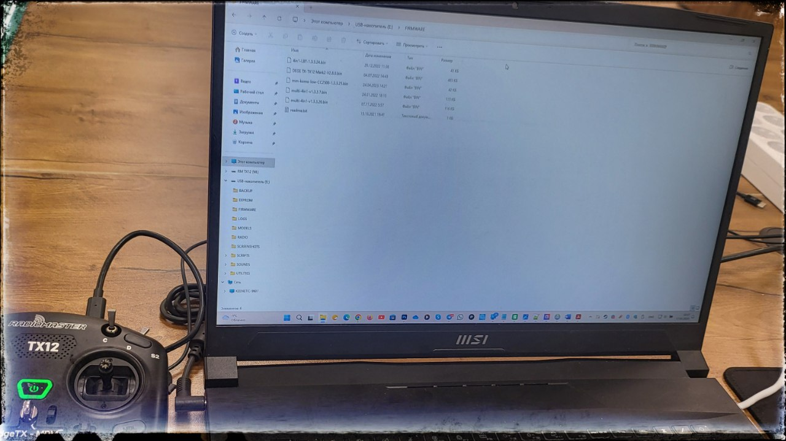
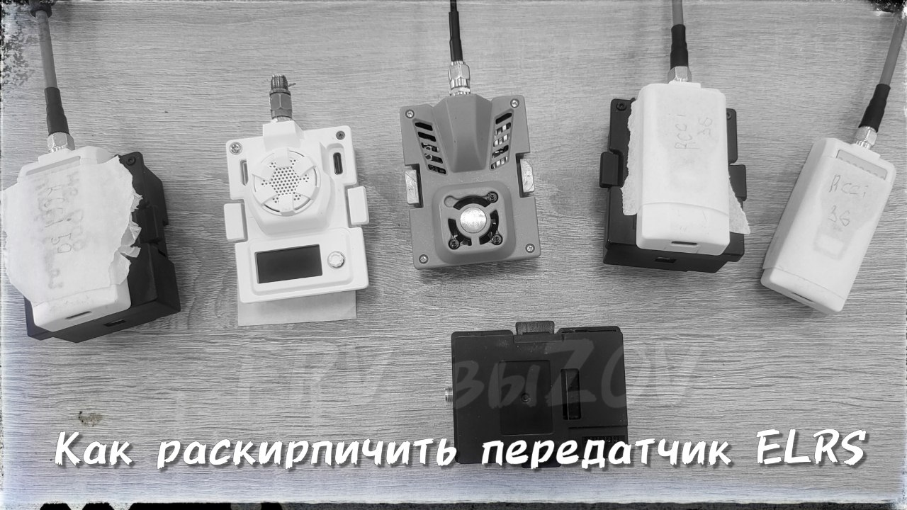

Edge TX Companion - программа для конфигурирования аппаратуры управления (пульта).
ℹ️ Программа, которая позволяет конфигурировать аппаратуру управления (пульт):
- сохранять профили,
- мигрировать модели,
- запускать симулятор интерфейса, -
для любой поддерживаемой аппаратуры
.
⏭️ С её помощью можно обновить прошивку пульта, сделать резервную копию и создать модель.
📎
ℹ️ Как пример использования этой программы - замена приветственной картинки.
- "
#прошивка_периферийного_оборудования
#прошивка_пульта_edgetx
#техник_fpv
#для_windows
#для_linux
#для_macos
Это вложение из поста t.me/platforma_fpv/13/441
Edge TX Companion - программа для конфигурирования аппаратуры управления (пульта).
ℹ️ Программа, которая позволяет конфигурировать аппаратуру управления (пульт):
- сохранять профили,
- мигрировать модели,
- запускать симулятор интерфейса, -
для любой поддерживаемой аппаратуры
.
⏭️ С её помощью можно обновить прошивку пульта, сделать резервную копию и создать модель.
📎
ℹ️ Как пример использования этой программы - замена приветственной картинки.
- "
#прошивка_периферийного_оборудования
#прошивка_пульта_edgetx
#техник_fpv
#для_windows
#для_linux
#для_macos
Это вложение из поста t.me/platforma_fpv/13/441

Заводские настройки для аппаратуры управления на EdgeTX.
ℹ️ Если какие-то действия с настройками привели к тому, что пульт перестал нормально функционировать, его можно сбросить (вернуть) до заводских настроек.
➡️
Общий архив с заводскими настройками для всех пультов на EdgeTX.
* Потребуется доп. установка lua скриптов, моделей, звуков.
📎
Распаковать архив на компьютер.
Содержимое папки
\GLOBAL
загрузить в корень SD-карты пульта.
Дополнительно из папки
\SDCARD
, по модели своей аппаратуры, загружаем папку
\SCRIPTS,
также в корень SD-карты.
⏭️ Выбор модели аппаратуры:
c480x272
выбираем для:
- FrSky Horus x10s,
- FrSky Horus x12s,
- Jumper T16,
- Jumper T18,
- RadioMaster TX16s / TX16s mkII.
c480x320
выбираем для:
- Flysky PL18,
- Flysky Paladin EV (PL18EV),
- Jumper T15.
c320x480
выбираем для:
- Flysky Nirvana NV14,
- Flysky Elysium EL18.
bw128x64
выбираем для:
- BetaFPV LiteRadio3 Pro,
- FrSky Taranis Q X7,
- FrSky Taranis X-Lite,
- FrSky Taranis X9 Lite,
- iFlight Commando 8,
- Jumper T20,
- Jumper T-Lite,
- Jumper T-Pro / T-Pro v2,
- RadioMaster Boxer,
- RadioMaster Pocket,
- RadioMaster TX12 / TX12 mkII,
- RadioMaster MT12,
- RadioMaster Zorro.
bw212x64
выбираем для:
- FrSky Taranis X9D,
- FrSky Taranis X9D+,
- FrSky Taranis X9D+ 2019.
➡️
Архивы с заводскими настройками для пультов RadioMaster TX12 версий ELRS и MPM. Полные копии содержимого SD-карты с рабочих пультов (с lua скриптами, моделями, звуками).
Содержимое разархивируется и заливается в корень
SD-карты
пульта.
*Карту предварительно нужно отформатировать.
#прошивка_периферийного_оборудования
#техник_fpv
#прошивка_пульта_edgetx
Это вложение из поста t.me/platforma_fpv/13/464

LUA-скрипты для для аппаратуры управления на EdgeTX
.
ℹ️ LUA-скрипт представляет из себя дополнительное программное обеспечение и служит для расширения базового функционала аппаратуры управления (пульта).
* Пример:
Скрипты, доступные к скачиванию 17.01.2025 на github
- ExpressLRS Configurator - работа с оборудованием ERLS,
- Yaapu telemetry widget - отображение информации GPS на экране аппаратуры$
- ExpressLRS Telemetry Widget (Betaflight & iNav) – отображение на экране пульта телеметрии ExpressLRS LinkStats, а также общей телеметрии полетного контролера на Betaflight и iNav;
- ExpressLRS RF Telemetry Widget (for fixed wing/heli) – отображение на экране пульта радиочастотной телеметрии для самолетов/вертолетов/планеров, а также скорости передачи радиосигнала/качество связи/мощность/rssi1/rssi2;
- Yaapu telemetry widget – отображение на экране пульта GPS-телеметрии полетного контролера на ArduPilot;
- Yaapu Horus Mapping Widget – оффлайн GPS-навигатор для пультов Horus и T16, поддерживает все полетные контролеры, которые могут передавать GPS-телеметрию в EdgeTX;
- GPS widget – отображение на экране пульта GPS-телеметрии, общего пройденного расстояния, расстояние до точки старта, координаты точки старта, запись данных в журнал;
- GPS Plus Code, Home Arrow and AvgBatt widgets – набор виджетов GPS-телеметрии для цветных и монохромных экранов, показывает координаты, расстояние и направление до точки старта;
- Betaflight Setup – для полетного контролера на Betaflight позволяет с пульта менять настройки: PID, rates, каналы и мощность видеопередатчика;
- INAV Telemetry Flight Status - отображение на экране пульта телеметрии полетного контролера на INAV;
- FM2M ToolBox – отображение на экране пульта телеметрии полетного контролера на Betaflight.
- .... весь реестр скриптов на гитхабе и в других открытых источника.
ℹ️ Скачанный скрипт устанавливается на SD-карту пульта в папку
\SCRIPTS\TOOLS.
Непроверенная внешняя ссылка
Скачать LUA-скрипты с github.com
Скачать LUA-скрипты с github.com
#прошивка_периферийного_оборудования
#прошивка_пульта_edgetx
#техник_fpv
Это вложение из поста t.me/platforma_fpv/13/489

Прошивки для аппаратуры управления на EdgeTX.
Потребуется в случае необходимости восстановления и/или обновления аппаратуры EdgeTX.
ℹ️ Прошивка EdgeTX является более новым, более продвинутым форком (ответвлением) OpenTX. Для EdgeTX выпускаются регулярные обновления и постоянно добавляются новые функции. Вдобавок к этому, EdgeTX предлагает некоторые преимущества при использовании системы ExpressLRS, например, опрос подвеса на частоте 500 Гц.
⏭️
Список пультов:
Jumper T16, Jumper T18, RadioMaster TX16s / TX16s mkII, Jumper T15, BetaFPV LiteRadio3 Pro, iFlight Commando 8, Jumper T20, Jumper T-Lite, Jumper T-Pro / T-Pro v2, RadioMaster Boxer, RadioMaster Pocket, RadioMaster TX12 / TX12 mkII, RadioMaster MT12, RadioMaster Zorro, все модели FlySky под EdgeTX.
📝 Архив с прошивками необходимо скачать
на компьютер
, распаковывать, выбрать прошивку для модели Вашего пульта и загрузить на SD-карту указанного пульта, в папку
/FIRMWARE
. Процесс прошивки пульта описан в инструкции.
➡️
На 17.01.2025 актуальная версия прошивки: EdgeTX "Centurion" v2.10.5.
#прошивка_периферийного_оборудования
#прошивка_пульта_edgetx
#техник_fpv
Это вложение из поста t.me/platforma_fpv/13/491

Как «раскирпичить» передатчик
ℹ️ Если при прошивке неправильным таргетом (прошивкой не для своей модели) или другой ошибки передатчик превратился в «кирпич» - не работает, не раздает wi-fi, его можно попробовать восстановить («раскирпичить») прошивкой с помощью USB-кабеля (метод прошивки в ExpressLRS Configurator – UART).
Для "раскирпичивания" нужно перевести передатчик в режим загрузчика.
Рассмотрим на примере двух передатчиков BetaFPV 915 Micro TX и HappyModel ES900TX.
➡️ Для
BetaFPV 915 Micro
TX нужно переключатели установить в положение:
1-2 и 5-7 – в нижнее положение;
3-4 – в верхнее положение.
➡️ Для
HappyModel ES900TX
, снять крышку и поставить переключатели (отсчет от USB-порта):
1-4 – в нижнее положение;
5-6 – в верхнее положение.
1. Подключить с помощью USB-кабеля передатчик к компьютеру:
- BetaFPV 915 Micro TX – USB Type C;
- HappyModel ES900TX – micro USB.
2. В диспетчере устройств, в разделе «Порты (COM и LPT)» определить номер порта, по которому подключен передатчик.
3. В ExpressLRS Configurator, после выбора правильного таргета:
- выбрать метод прошивки – UART;
- в поле действия выбрать порт, по которому подключился передатчик, из диспетчера устройств;
- в параметрах прошивки поставить галочку – Стереть перед прошивкой;
- нажать кнопку – ПРОШИТЬ.
📎
#прошивка_периферийного_оборудования
#техник_fpv
#FPV
Это вложение из поста t.me/platforma_fpv/13/1174

Как подключиться по WI-Fi к приемнику на MILELRS
.
ℹ️ MILELRS - прошивка оппонентов, для управления FPV.
Не имеет стандартного пароля: каждая шифрованная пара (приемник-передатчик) имеет свой уникальный пароль.
К приемнику на MILERLS подключиться по Wi-Fi можно двумя способами
1. Получить пароль, скачав прошивку.
Понадобиться TTL адаптер и программа "
".
Получать пароль необходимо в том случае, если нужно посмотреть настройки приемника (например частоты). В ином случае можно сразу прошивать на свою прошивку (п.2).
2. Сбросить настройки до значений «по-умолчанию».
Сброс настроек нужен для того, чтобы можно было прошить приемник на свою прошивку (например KapibaraLRS).
- подать питание на приемник (через полетник, TTL);
- как приемник запустится (начнет мигать светодиод) – зажать кнопку BOOT (где есть) или замкнуть контакты BOOT (где кнопки нет) не менее чем на 20 секунд;
- после перезагрузить приемник;
- название сети сбросится на ExpressRLS RX, и стандартный пароль expressrls.
3. Если на приемнике не работает кнопка BOOT.
Попробуйте аккуратно удалить кнопку с платы и замкнуть контакты вручную (с помощью проволоки или пинцета), далее см. п1.
Если не помогло, то прошить с помощью полетного контроллера - подробнее в инструкции "
4. Если у Вас нет задачи "скачать прошивку"
,
а нужно только рабочий приемник, то переходите в инструкцию "
#ПРОШИВКА
#прошивка_для_FPV
#FPV
#техник_fpv
#управление
Это вложение из поста t.me/platforma_fpv/2/1172

Прошивка пульта DJI RC PRO с версии Consumer на версию Enterprise, и наоборот
.
ℹ️ Открывает возможность использовать пульта DJI RC PRO с разными версиями дронов:
➡️ Прошивка
CONSUMER
дает возможность использовать пульт DJI RC PRO с дронами версии CONSUMER :
Mavic 3, Mavic 3 classik/cine/pro, Mavik Air 2S
.
➡️ Прошивка
ENTERPRISE
дает возможность использовать пульт DJI RC PRO с дронами версии ENTERPRISE:
Mavic 3 T/E/M
📝 Краткий набор того, что Вам потребуется
1. Прошивка: CONSUMER или ENTERPRISE
2. Компьютер с Windows, кабель USB.
3. Пульт DJI RC PRO.
- включить пульт, подключить USB-кабелем к компьютеру;
- запустить VPN и программу Drone-Hack;
- подробнее смотрите в Инструкции.
Доступны для скачивания
#прошивка_периферийного_оборудования
#прошивка_пульта_dji
#DJI
#техник_бпла
Это вложение из поста t.me/platforma_fpv/13/630

Утилита мультбинда для пультов
DJI RC Pro (rm510b) и DJI RC Plus (rm 700)
.
ℹ️ Возможность использовать один пульт с разными версиями дронов: Mavic 3E/3T/3M (Enterprise), Mavic 3/3 Classic/3 Cine/3 Pro, Mavic 3 Mini/3 Mini Pro, Mavic Air2S (Consumer). *
📝Шаг 1. Проверка совместимости пульта с утилитой
.
Для проверки необходимо:
📎
- распаковать архив на компьютер,
- включить и подключить пульт к компьютеру,
- запустить файл "
detect_revision.bat
" из папки
TOOLS
.
По результатам проверки:
- модель
rm510b/rm 700
;
- серийный номер
4QQZ…
или
5YSZ
.. (для rm510b) /
4LF…
(для rm 700),
- наличие установленной утилиты
cannot open
.
Если значения совпадают с
приведенными
, то утилиту можно устанавливать.
📝
Шаг 2. Установка утилиты мультибинда на пульт DJI.
Вам понадобится:
- компьютер с Windows,
- пульт DJI RC Pro (rm510b) или DJI RC Plus (rm 700),
- файлы установки утилиты,
- кабель USB (typeA/typeC).
* скачиваем утилиту на windows, далее следуем инструкции по установке.
⚠️ После распаковки не переименовывать и не переносить файлы из оригинальных папок. Установка привязана к оригинальному пути к файлам и названиям.
📝 Шаг 3. Работа.
Интерфейс "утилиты мультибинда" на пультах RC Pro версий "release 1" и "release 2" будет
, проверить
можно на первом Шаге данной инструкции.
На пультах PC Plus и PC Pro версии "release 1"
отображаются иконки с названиями типов пультов. (на фото слева) Чтобы выбрать нужную модель дрона - надо знать с каким пультом он совместим, и выбрать иконку соответствующего пульта.
RC Plus - работа с дроном Matrice 30T (Enterprise)*,
RC Enterprise - работа дронами Mavic 3E/3T/3M (Enterprise),
RC Pro - работа дронами Mavic 3/3 Classic/3 Cine/3 Pro, Mavic 3 Mini/3 Mini Pro, Mavic Air2S (Consumer).
Выбираете ярлык нужного приложения (под модель дрона), после чего пульт перезапускается уже с выбранным полетным приложением.
📎
На пультах RC Pro версии "release 2"
предлагается выбрать сразу нужную модель дрона (на фото справа), весь модельный ряд выведен на экран.
Выбираете нужную модель дрона, приступаете к работе.
📎
⚠️Чтобы не было ограничений на 5 полетов, при использовании неродного пульта, нужно:
- знать учетную запись, но которую активирован дрон, и запускать его с этой записи,
- или отвязать дрон от учетной записи (либо с оригинальной учетки, либо через программу UNBIND от РХ).
❔
.
❔ Почему не устанавливается утилита на пульт DJI RC Pro Consumer (rm510) -
#прошивка_периферийного_оборудования
#прошивка_пульта_dji
#техник_бпла
#DJI
Это вложение из поста t.me/platforma_fpv/13/942
#ПРОШИВКА
ПРОШИВКА ДЛЯ FPV ДРОНА
Приемник-передатчик (RX-TX)
Не умею отображать вложенные ссылки на топики
модифицированная прошивка для передатчика и приемника ELRS (управление)
📝
Полетный контроллер
- российская прошивка для пк - защита от дизарма
📝
Не умею отображать вложенные ссылки на топики
украинская прошивка для пк
Переключение видеоканалов
- переключение видеоканалов в полете с пульта
📝
Не умею отображать вложенные ссылки на топики
- переключение видеоканалов в полете с пульта
📖
: файлы для загрузки, инструкция
Регулятор оборотов
- прошивка для 32-битного регуляторов оборотов моторов (ESC)
Аппаратура управления
Инструкции по прошивке, для техника FPV
ПРОШИВКА ДЛЯ DJI
1001 прошивка на текущий момент через терминал недоступна
- альтернатива тут -
Это вложение из поста t.me/platforma_fpv/2/202
Программы и
#прошивка_периферийного_оборудования
➤ Аппаратура управления FPV:
➤ Аппаратура управления DJI:
➤ Прошивка для БПЛА
Веб-страница создана автоматически на основе поста пользователя ПЛАТФОРМА_FPV